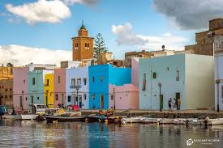

Vieux Port de Bizerte
Le pittoresque Vieux Port de Bizerte, avec ses bateaux de pêche colorés et ses façades méditerranéennes, est le cœur historique de la ville. Ce port naturel, utilisé depuis l'époque punique, offre une atmosphère unique où se mêlent tradition maritime et charme architectural.